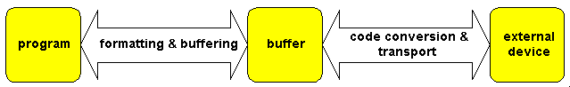
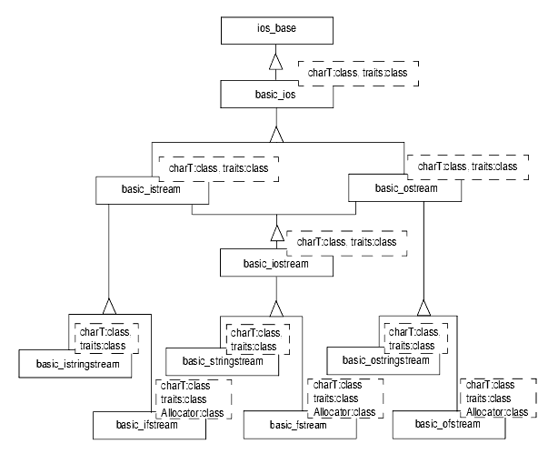
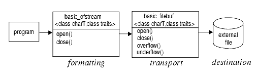
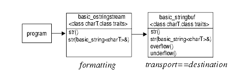
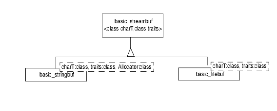
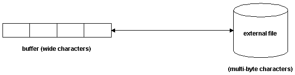
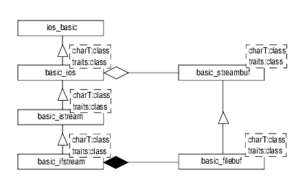
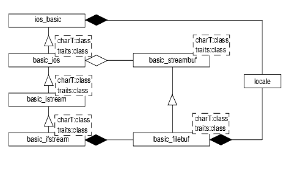

As explained earlier, the standard iostreams have two layers, one for formatting, and another for code conversion and transport of characters to and from the external device. For convenience, let's repeat here as Figure 22 the same illustration of the iostreams layers given as Figure 20:

The next sections gives a more detailed description of the iostreams software architecture, including the classes and their inheritance relationship and respective responsibilities. If you would rather start using iostreams directly, go on to Chapter 28.
Classes that belong to the formatting layer are often referred to as the stream classes. Figure 23 illustrates the class hierarchy of all the stream classes:

You may notice that the classes strstream, istrstream, and ostrstream are not included in this diagram, even though we describe them in the Apache C++ Standard Library Reference Guide. Sometimes called deprecated features in the standard, these classes are provided solely for the sake of compatibility with the traditional iostreams, and will not be supported in future versions of the standard iostreams.
In the next sections, we discuss in more detail the components and characteristics of the components that are included in the class hierarchy given in Figure 23.
This class is the base class of all stream classes. Independent of character type, it encapsulates information that is needed by all streams. This information includes:
Control information for parsing and formatting
Additional information for the user's special needs, that is, a way to extend iostreams
The locale imbued on the stream
Additionally, ios_base defines several types that are used by all stream classes, such as format flags, status bits, open mode, exception class, and so on.
Here is the virtual base class template for the stream templates:
template <class charT, class traits = char_traits<charT> > basic_ios;
The class holds a pointer to the stream buffer, which contains the underlying character buffer and state information that reflects the integrity of the stream buffer. Note that basic_ios<> is a class template taking two parameters, the type of character handled by the stream, and the character traits.
The type of character can be type char for single-byte characters, or type wchar_t for wide characters, or any other user-defined character type. There are instantiations for char and wchar_t provided by the C++ Standard Library.
For convenience, there are typedefs for these specializations:
typedef basic_ios<char> ios;
and
typedef basic_ios<wchar_t> wios;
Note that std::ios is not a class anymore, as it was in the traditional iostreams. It is a synonym for a template specialization. If you have existing programs that use the old iostreams, they may no longer be compatible with the standard iostreams. (See Chapter 45.)
Character traits describe the properties of a character type. Many things change with the character type, such as:
The end-of-file value. For type char, the end-of file value is represented by an integral constant called EOF. For type wchar_t, there is a constant defined that is called WEOF. For an arbitrary user-defined character type, the associated character traits define what the end-of-file value for this particular character type is.
The type of the EOF value. This needs to be a type that can hold the EOF value. For example, for single-byte characters, this type may be int, different from the actual character type char.
The type of the WEOF value. This needs to be a type that can hold the WEOF value. This will typically be the same as the wint_t type.
The equality of two characters. For an exotic user-defined character type, the equality of two characters might mean something different from just bit-wise equality. Here you can define it.
A complete list of character traits is given in the Apache C++ Standard Library Reference Guide entry for char_traits.
There are specializations defined for type char and wchar_t. In general, this class template is not meant to be explicitly instantiated for a user-defined character type. You should always define class template specializations.
Fortunately, the C++ Standard Library is designed to make the most common cases the easiest. The traits template parameter has a sensible default value, so usually you need not bother with character traits at all.
The three stream class templates for input and output are:
template <class charT, class traits=char_traits<charT> > basic_istream; template <class charT, class traits=char_traits<charT> > basic_ostream; template <class charT, class traits=char_traits<charT> > basic_iostream;
The class template std::basic_istream handles input, and std::basic_ostream is for output. The class template std::basic_iostream deals with input and output; such a stream is called a bidirectional stream.
The three stream templates define functions for parsing and formatting, which are overloaded versions of operator>>() for input, called extractors, and overloaded versions of operator<<() for output, called inserters.
Additionally, there are member functions for unformatted input and output, like read(), write(), etc.
The file stream classes support input and output to and from files. They are:
template <class charT, class traits=char_traits<charT> > basic_ifstream; template <class charT, class traits=char_traits<charT> > basic_ofstream; template <class charT, class traits=char_traits<charT> > basic_fstream;
There are functions for opening and closing files, similar to the C functions fopen() and fclose(). Internally they use a special kind of stream buffer, called a file buffer, to control the transport of characters to/from the associated file. The function of the file streams is illustrated in Figure 24:

The string stream class templates support in-memory I/O; that is, reading and writing to a string held in memory. They are:
template <class charT, class traits = char_traits<charT>,
class Allocator = allocator<charT> >
basic_istringstream;
template <class charT, class traits = char_traits<charT>,
class Allocator = allocator<charT> >
basic_ostringstream;
template <class charT, class traits = char_traits<charT>,
class Allocator = allocator<charT> >
basic_stringstream;
There are functions for getting and setting the string to be used as a buffer. Internally a specialized stream buffer is used. In this particular case, the buffer and the external device are the same. Figure 25 illustrates how the string stream classes work:

Classes of the transport layer of the standard iostreams are often referred to as the stream buffer classes. Figure 26 gives the class hierarchy of all stream buffer classes.

The stream buffer classes are responsible for transfer of characters from and to external devices.
This class template represents an abstract stream buffer:
template <class charT, class traits = char_traits<charT> > basic_streambuf;
It does not have any knowledge about the external device. Instead, it defines the virtual functions overflow() and underflow() to perform the actual transport. These two functions have knowledge of the peculiarities of the external device they are connected to. They must be overridden by all derived stream buffer classes, like file and string buffers.
The stream buffer class maintains two character sequences: the get area, which represents the input sequence read from an external device, and the put area, which is the output sequence to be written to the device. There are functions for providing the next character from the buffer, such as sgetc(), etc. They are typically called by the formatting layer in order to receive characters for parsing. Accordingly, there are also functions for placing the next character into the buffer, such as sputc(), etc.
A stream buffer also carries a locale object.
The file buffer class templates associate the input and output sequences with a file. A file buffer takes the form:
template <class charT, class traits = char_traits<charT> > basic_filebuf;
The file buffer has functions like open() and close(). The file buffer class inherits a locale object from its stream buffer base class. It uses the locale's code conversion facet for transforming the external character encoding to the encoding used internally. Figure 27 shows how the file buffer works:

These class templates implement in-memory I/O:
template <class charT, class traits = char_traits<charT>,
class Allocator = allocator<charT> >
basic_stringbuf;
With string buffers, the internal buffer and the external device are one and the same. The internal buffer is dynamic, in that it is extended if necessary to hold all the characters written to it. You can obtain copies of the internally held buffer, and you can provide a string to be copied into the internal buffer.
The base class template basic_ios<> holds a pointer to a stream buffer. The derived stream templates, like file and string streams, contain a file or string buffer object. The stream buffer pointer of the base class template refers to this embedded object. This architecture is illustrated in Figure 28:

Stream buffers can be used independently of streams, as for unformatted I/O, for example. However, streams always need a stream buffer.
The base class ios_base contains a locale object. The formatting and parsing functions defined by the derived stream classes use the numeric facets of that locale.
The class template basic_ios holds a pointer to the stream buffer. This stream buffer has a locale object, too, usually a copy of the same locale object used by the functions of the stream classes. The stream buffer's input and output functions use the code conversion facet of the attached locale. Figure 29 illustrates the architecture:
